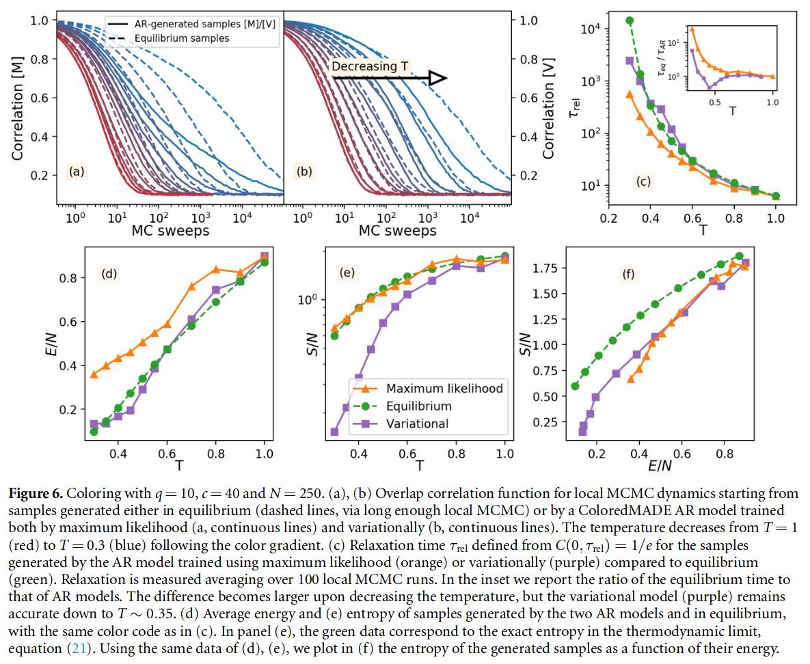
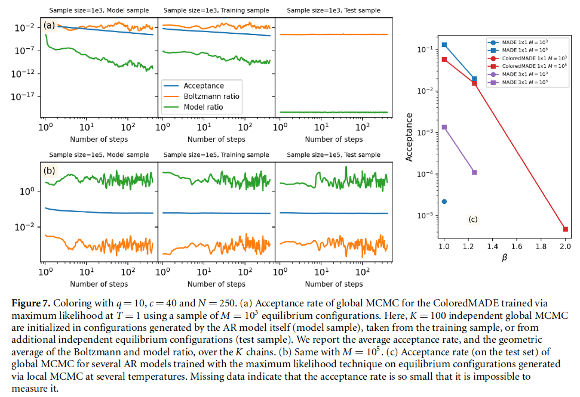
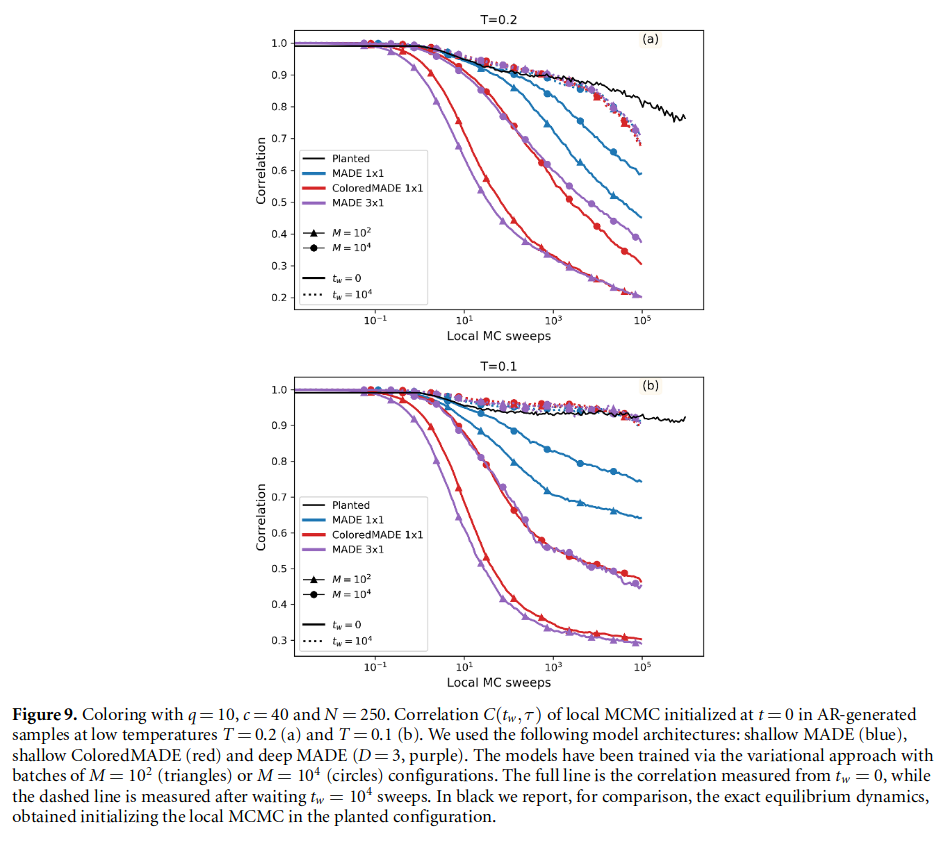
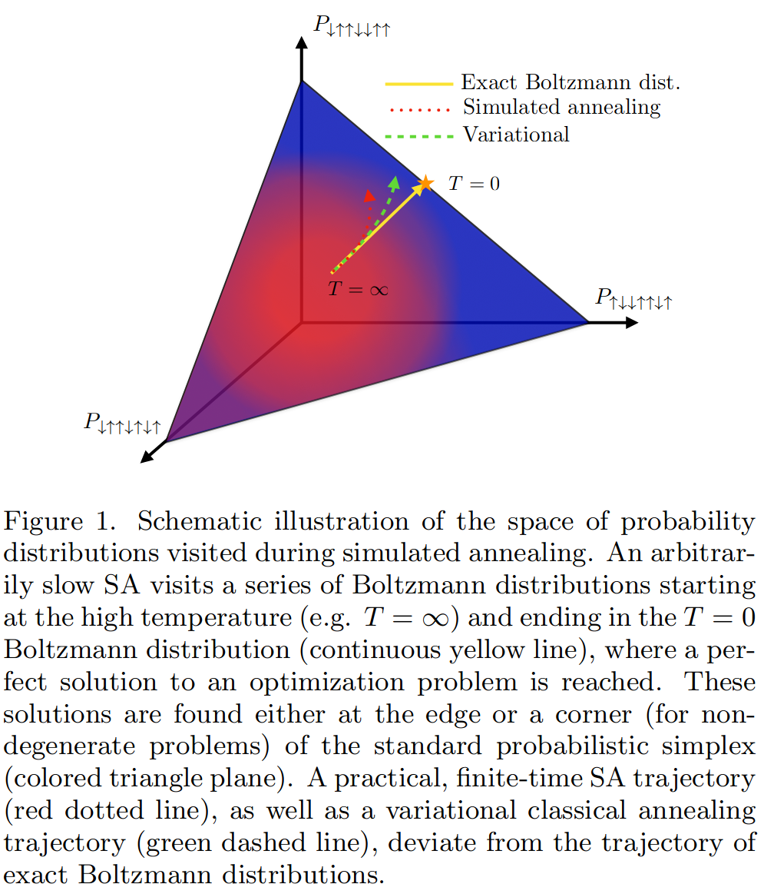
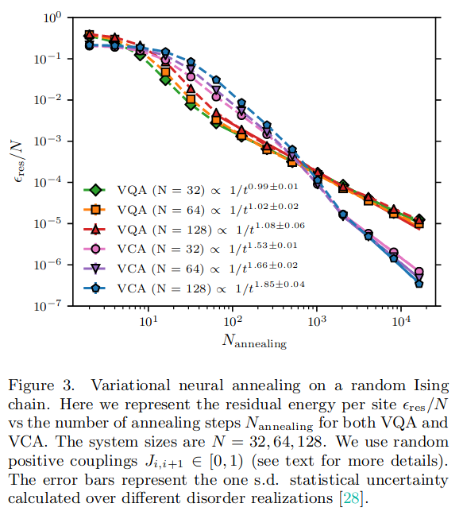
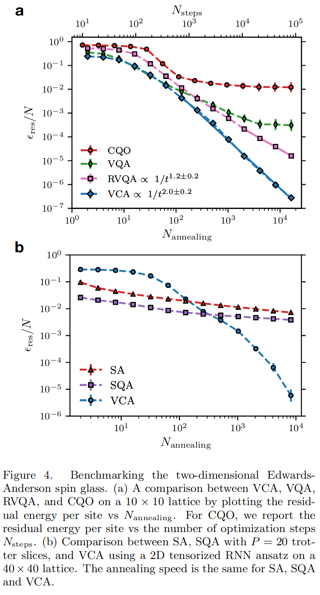
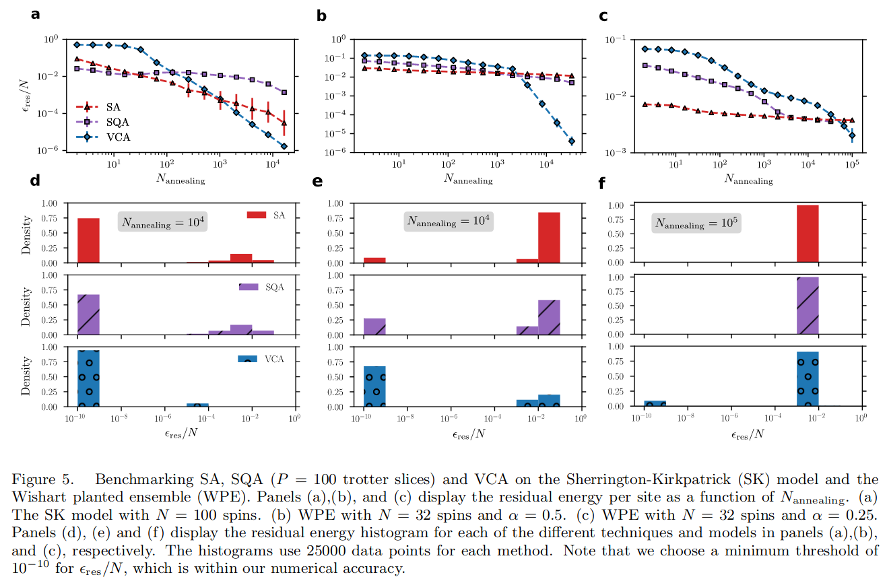

展示利用机器学习提升的MC在一些模型中的失败： * 为什么说失败？哪些指标说明失败？ * 在怎样的模型中？这种模型具有什么样的特点？ * 实验条件是什么？
参考文献： * Machine-learning-assisted Monte Carlo fails at sampling computationally hard problems 配套代码10.5281/zenodo.7567683 * Neural Annealing and Visualization of Autoregressive Neural Networks in the Newman–Moore Model * Glassy dynamics and aging in an exactly solvable spin model * Boundary conditions dependence of the phase transition in the quantum Newman-Moore mode * Visualizing the Loss Landscape of Neural Nets
Background
经典MC的问题在于使用细致平衡条件进行局部更新，无法处理临界慢化、关联长度长问题；一些改进的措施是将局部更新改为全局更新，但是这种方案与模型的结构直接相关。
最近利用机器学习诞生了一些高效的方案，通过近似分布P(σ)来获得目标分布，并且进行高效采样。
现在面临的困境本质与90年代修改MC方案是一样的，两种都是在进行采样。在当时已经提出了一些benchmark对不同方案进行检验。但是现在机器学习策略大多聚焦于解决MC之前的困境，并没有测试之前的benchmark。
接下来考虑一些难以采样的随机问题。
Fails at sampling computationally hard problems
在采样问题中通常会遇到mode-collapse in learning the auxiliary model，这是由于在多峰分布情况下模型只学习到其中的一个峰分布。
模型是否准确学到分布，作者提出了三个重要的判断指标： * 其采样的接受概率是否足够高 $$ \operatorname{Acc}\left[\sigma_{\text {old }} \rightarrow \sigma_{\text {new }}\right]=\min \left[1, \frac{\mathrm{e}^{-(\beta+\delta \beta) H\left(\sigma_{\text {new }}\right)} P_{\mathrm{AR}}\left(\sigma_{\text {old }}\right)}{\mathrm{e}^{-(\beta+\delta \beta) H\left(\sigma_{\text {old }}\right) }P_{\mathrm{AR}}\left(\sigma_{\text {new }}\right)}\right] $$ * 全局MCMC动态初始化于由AR模型生成的配置接近静止状态（即，像能量这样的单时间数量在时间上是恒定的，而像相关性这样的双时间数量只依赖于时间差）。不一定吧？ * 时间依赖的关联项消失。
这个作者提出的benchmark主要针对VAN这种直接生成下一步分布的模型，但是如果模型只是估计分布概率，这个benchmark并不有效。
Coloring
该模型本质就是随机图上的Potts Model。
关于这个模型有一些参考资料：
- random first order transition universality class
- Statistical physics of inference: thresholds and algorithms Adv. Phys
The hard-to-sample coloring problem: N个变量σi ∈ {0, …, q − 1}，每一个有q概率染色，节点位于Erdős-Rényi随机图𝒢上，每条边以相同的概率进行采样，连通概率为c。将模型的Hamiltonian 写为： $$\begin{align} H(\sigma)=\sum_{\langle i, j\rangle \in \mathcal{G}} \delta_{\sigma_i, \sigma_j} \end{align}$$ 对于一个q态的Potts模型，这是一反铁磁模型，在这样的随机图的基态下如何选取使得能量最低，等价于随机图着色问题。
 Td线是玻璃相转变，在其之下关联时间随尺寸变大指数增加，Tk是凝聚线，在其之下不存在平坦的基态。其中小图表示在c = 40的情况，利用MCMC模拟不同体系尺寸的关联时间，横坐标为T − Td.关联函数为$C(t, \tau)=\frac{1}{N} \sum_{i=1}^N
\delta_{\sigma_i(t), \sigma_i(t+\tau)}$.
Td线是玻璃相转变，在其之下关联时间随尺寸变大指数增加，Tk是凝聚线，在其之下不存在平坦的基态。其中小图表示在c = 40的情况，利用MCMC模拟不同体系尺寸的关联时间，横坐标为T − Td.关联函数为$C(t, \tau)=\frac{1}{N} \sum_{i=1}^N
\delta_{\sigma_i(t), \sigma_i(t+\tau)}$.
每幅图中两条水平的线表示MCMC采样的值（橙色），或者空腔采样的值（蓝色）。横坐标表示不同的模型。可以看到能量和熵在均值附近，考虑涨落影响是正常的。考虑到温度较高，不在基态也合理。接下来再看，随着模型的表现能力增强（网络复杂、regularization、dropout），能量下降熵也下降，作者认为这里发生这种因素的原因是过拟合（非常主观的猜测，但这个猜测却是文章的重要转折点）。接下来作者认为评判的参数维度是更低的能量于更高的熵，最好的模型是shallow MADE (ColoredMADE)。
接下来将用表现最好的网络进行测试，演示其为什么失败。
 其中 variational 和 maximum likelihood 代表模型训练的两种方式，前者是wu等提出的方案，后者是基于前者方案加入极大似然估计（即进一步使用细致平衡挑选样本）。
a、b表明在高温下利用AR与传统算法没有区别高温本来关联就弱；在低温情况下利用AR系统转变的更快这个算法能解决关联问题，不是很好么？综上，AR失败的，因为不能在低温情况下采到能量更低的样本。以上讨论在T > 0.3的情况下，更低传统方法也会失效。
在d图中可以看出 maximum likelihood 策略在低温情况下能量较高，温度升高逐渐接近MCMC采样值。从e图中能够发现，熵的值接近。但是从f图看熵-能量关系，可以立刻看出与传统方案的区别。
从e图中看 variational 方案，可以发现，熵在低温情况下很低，这是由于发生了mode-collapsed，模型聚集在其中的一个峰上。
 其中the Boltzmann ratio PB(σnew )/PB(σold ) and the model ratio PAR(σold )/PAR (σnew ). 通过实验发现，接受率随着步数（与旧模型的相差程度）的增多，在剧烈下降，这意味着 maximum likelihood 方案在低温情况基本不能探索，能量无法下降。
 上图想要说明，因为在低温情况，传统采样关联性很强，而AR模型关联性下降很快，因此认为能量依旧很高。为什么不直接放能量图呢？我怀疑是因为AR模型在几个能量相近局域最小值之间跳，传统方法陷在一个局域最小值点中了。
Neural Annealing and Visualization in the Newman–Moore Model
The classical triangular plaquette model (TPM), introduced by Newman and Moore, also named Newman–Moore Model.
The classical triangular plaquette model 是一个用于描述磁性系统中的自旋冰态（spin ice state）的简化模型。在这个模型中，磁性离子位于三角形stop的顶点上，形成一个由三角形组成的格子（plaquette）。每个三角形代表一个“空位”，其中的磁性离子可以有向上或向下的磁矩。在自旋冰态中，由于几何限制和磁相互作用的特定规则，每个三角形内部的磁矩配置必须是两个向上，一个向下，或者两个向下，一个向上。这种配置被称为“two-in, one-out”规则。
这篇文章有一个问题，其使用了RNN进行训练。而且并没有说明该网络在非阻措问题上的表现能力。
在Newman–Moore Model上，可以观察到在小尺寸下符合的很好，但是随着晶格尺寸的变大，基态自由能突然发生改变（我更怀疑是由于计算失误），有一个突然的上升，这可能由于陷入到了一种局域解中。
除了变分自由能的最小值现在已接近T0 = 10时的确切值。随着温度的降低，景观形状变得更加崎岖，出现了相当大的高能量平台和快速变化的障碍，最终导致局部最小值消失，退火结束时变成了完全混乱的景观。因此，从这个角度来看，很明显这里存在训练问题，阻碍了变分神经退火的成功应用。
这篇文章需要更多的实验
A method for quantifying the generalization capabilities of generative models for solving Ising models
Here we design a Hamming distance (一种用于衡量字符串之间差距的距离判定方法，将字符编码为二进制，通过记数差异位数，得到距离) regularizer in the framework of a class of generative models, variational autoregressive networks (VANs), to quantify the generalization capabilities of various network architectures combined with VAN.
$$\begin{align} \mathcal{L}=&F_q+R_h \\ F_q=&\sum_{\mathbf{s}} q_\theta(\mathbf{s})\left[E(\mathbf{s})+\frac{1}{\beta} \ln q_\theta(\mathbf{s})\right] \\ R_h=&\sum_{\mathbf{s}}\left|h m_{\mathbf{g}}(\mathbf{s})-z\right| \\ \nabla_\theta \mathcal{L}=&\mathbb{E}_{\mathbf{s} \sim q_\theta(\mathbf{s})}\left\{\left[E(\mathbf{s})+\frac{1}{\beta} \ln q_\theta(\mathbf{s})\right] \nabla_\theta \ln q_\theta(\mathbf{s})\right\} \\ \end{align}$$ 其中hmg(s)衡量与基态的距离。 最后一项目有问题，因为Rh采样方式是通过qθ。不过不会对训练产生影响，毕竟反向传播是准确的。
上图演示了收敛到正确基态的过程。
该模型有效的原因就是因为加入了Hamming distance，但是需要知道正确的基态，这个正确基态是这样来的： > The previous researches have illustrated that only by containing the configurations in the training datasets that are close to the ground state, measured by Hamming distance, to train the neural networks, may we obtain the ground state after training [4–7]. Therefore, we design this regularizer to explore the relationship between the Hamming distance and the success rates of finding the ground state for different network architectures combined with VAN.
不得不说，度量学习（distance metric learning）是提升表现力的好手段。
Message Passing Variational Autoregressive Network for Solving Intractable Ising Models
通过加入消息传递机制，提升了模型的表现能力。
上图基于Wishart planted ensemble (WPE)模型，分别对比了不同算法在基态时候能量差分布图。说明文章中所提到的算法是有其优越性的。
消息传递层，主要增加了不同节点之间相互作用的耦合。文章同时还论证了为什么增加这样的网络结构能够降低能量、自由能，从而提升模型能力。 文章中如何从(21)得到(18)，我觉得这里有问题。同样的对于(22)的论证同样存在问题，非凸函数qθ最外层加一个ln 并不会变成凸函数。
实验结果说明，在具有阻锉的结构下，文章所提到的方法确实能够得到更好的基态。
这篇文章加入了消息传递层，使得最终能探索到更低的能量状态。消息传递的方案本身，是在处理具有弱阻锉情况下的模型自由能，而文章中用到的模型属于弱耦合的模型，是消息传递算法可以处理的。
Variational Neural Annealing
主要探讨在RNN的基础上，利用模拟退火方式采样，结合变分方式训练，最后在基态问题上的优秀表现。
文章中采用的变分退火公式： Fλ(t) = ⟨Htarget ⟩λ − T(t)Sclassical (pλ),
 从红色到蓝色代表了温度的下降，其中黄线是Boltamann 分布，红线和绿线代表模拟和变分的结果，可见最后变分的结果更靠近真实分布
模拟退火算法在经典和量子状态下的演示图。
接下来，文章展示了在random Ising chains、Edwards-Anderson model、SherringtonKirkpatrick (SK) model、Wishart planted ensemble (WPE)下的实验结果，均展示了该方案能够很好的探索到模型基态。
  